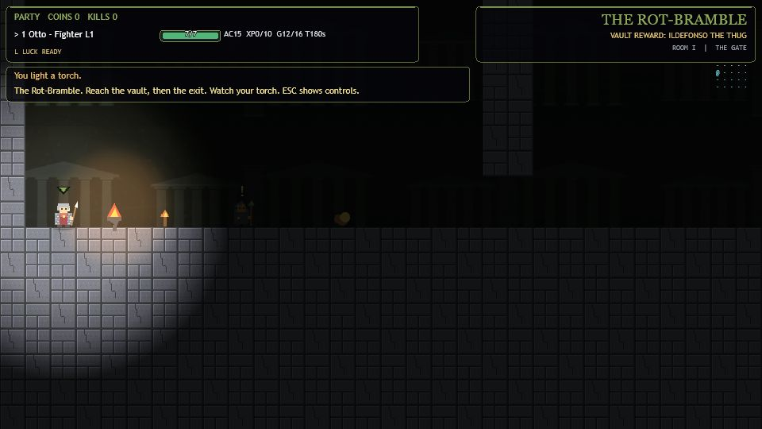
The Rot-Bramblediablerie · rot-bramble
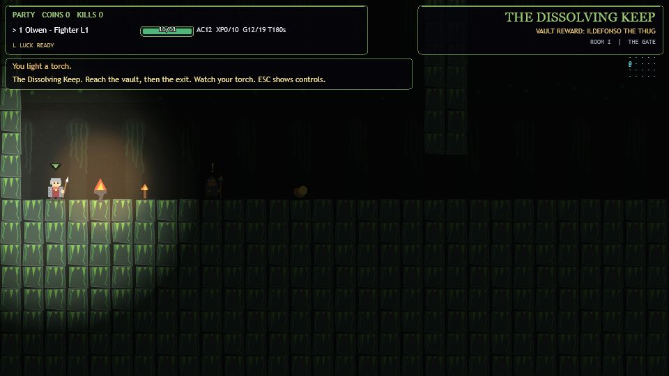
The Dissolving Keepdiablerie · mugdulblub-keep
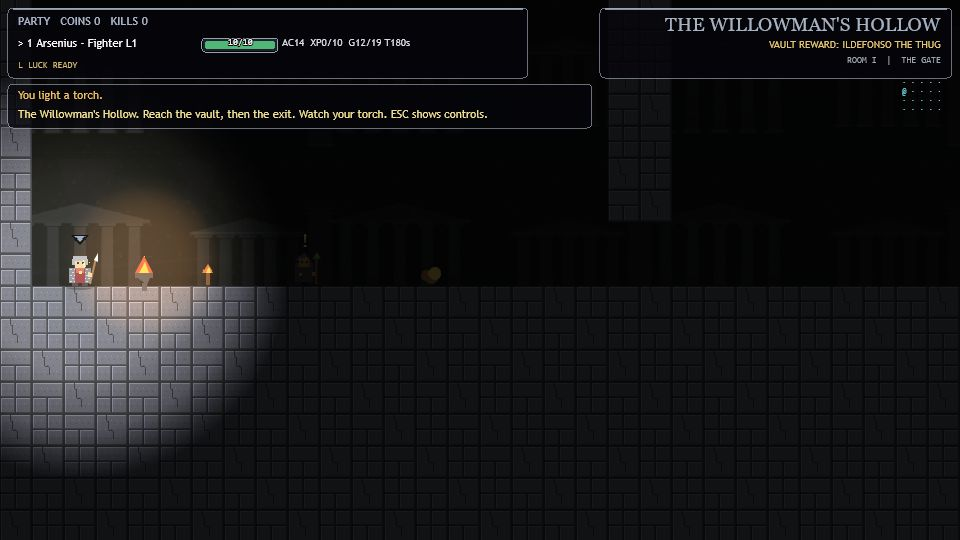
The Willowman's Hollowdiablerie · willowman-hollow
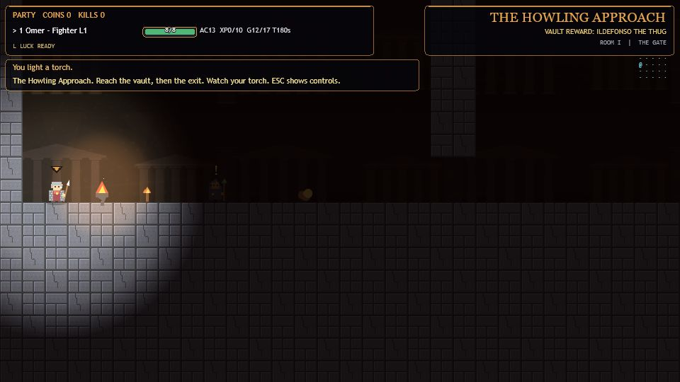
The Howling Approachred-sands · djurum-approach
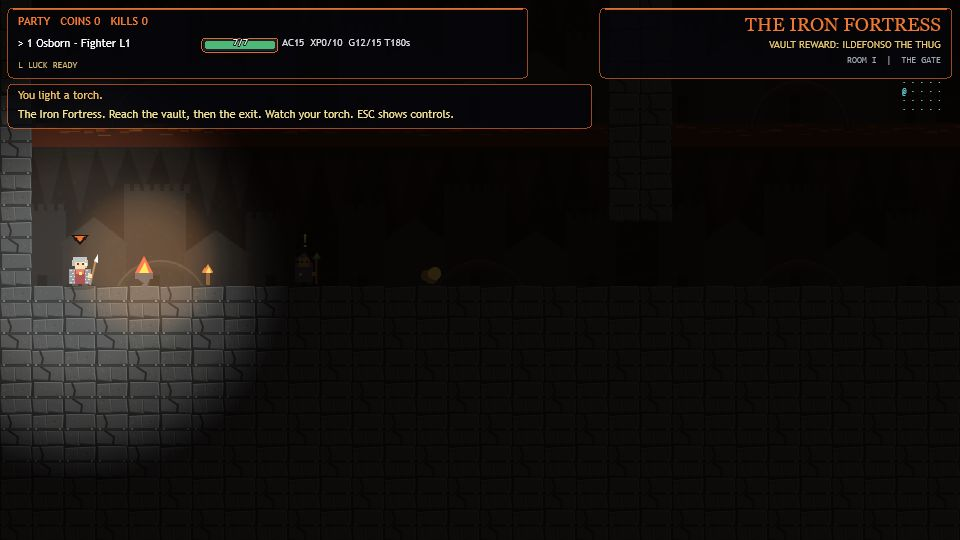
The Iron Fortressred-sands · iron-fortress
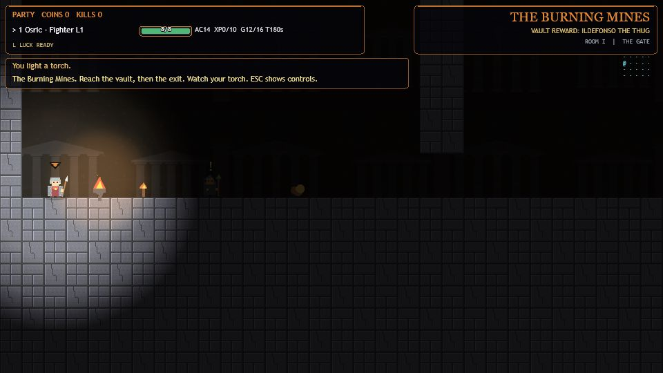
The Burning Minesred-sands · burning-mines
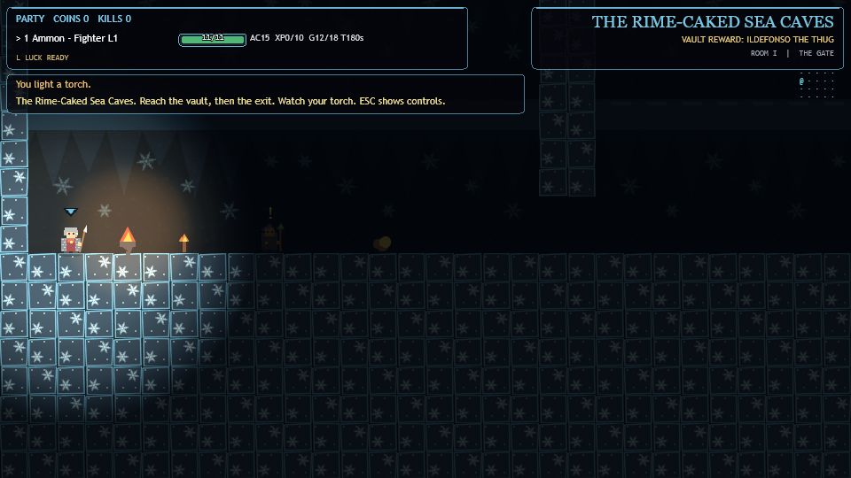
The Rime-Caked Sea Cavesmidnight-sun · rime-sea-caves
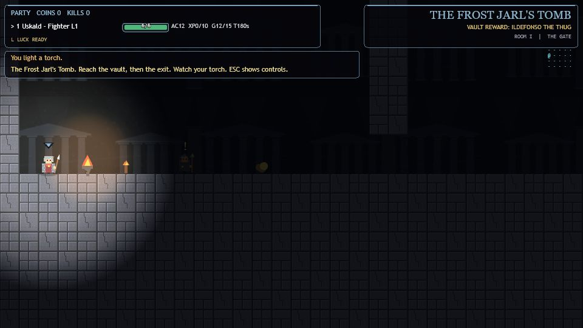
The Frost Jarl's Tombmidnight-sun · frost-jarl-tomb
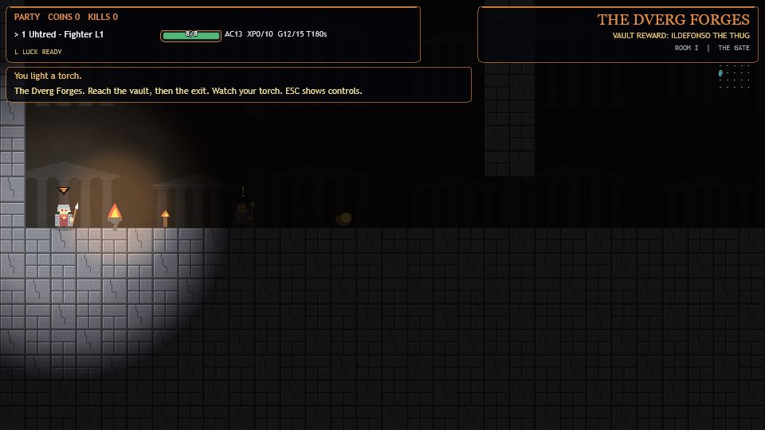
The Dverg Forgesmidnight-sun · dverg-forges
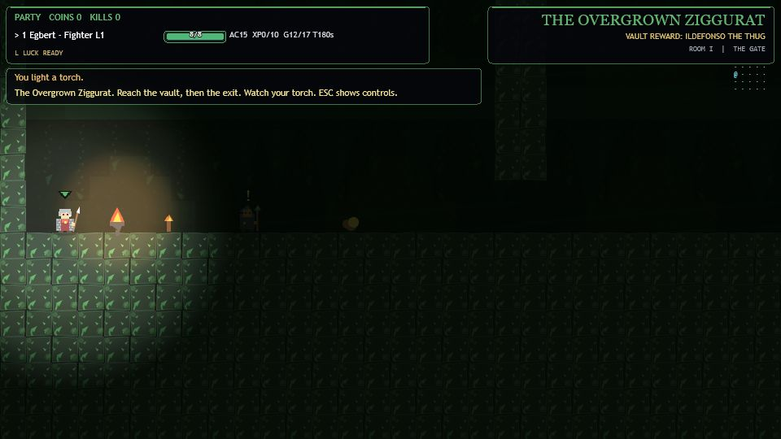
The Overgrown Zigguratriver-of-night · overgrown-basalt-ziggurat
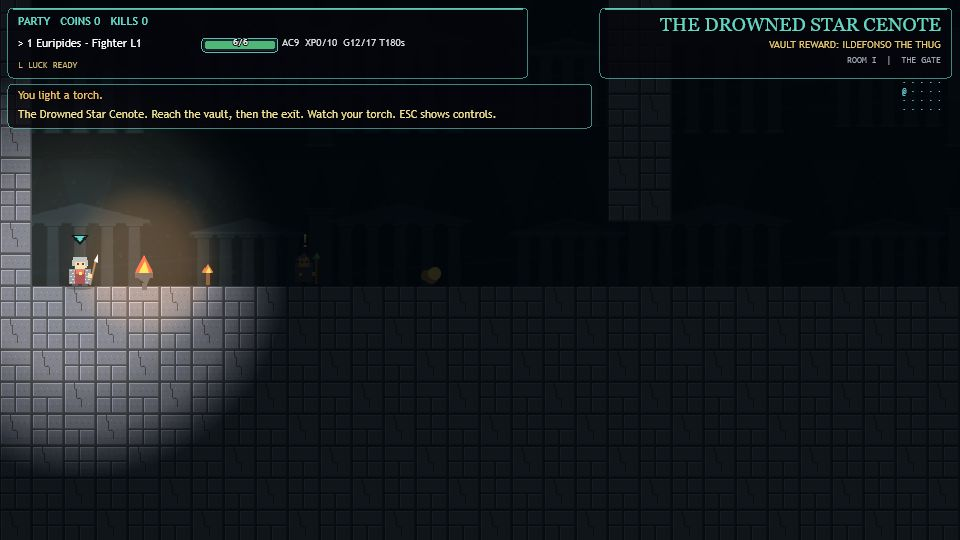
The Drowned Star Cenoteriver-of-night · drowned-star-cenote
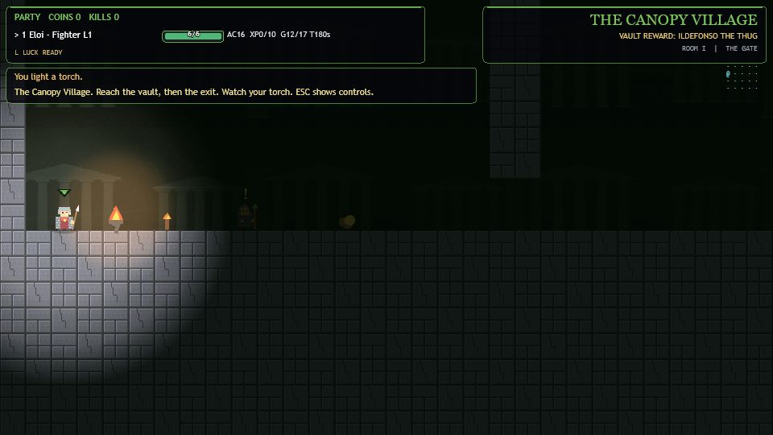
The Canopy Villageriver-of-night · canopy-village
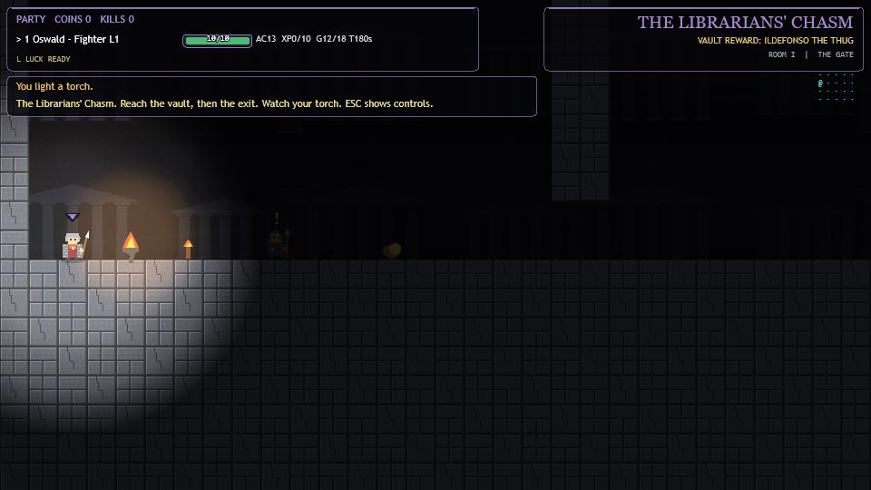
The Librarians' Chasmdwellers-in-the-deep · librarians-chasm
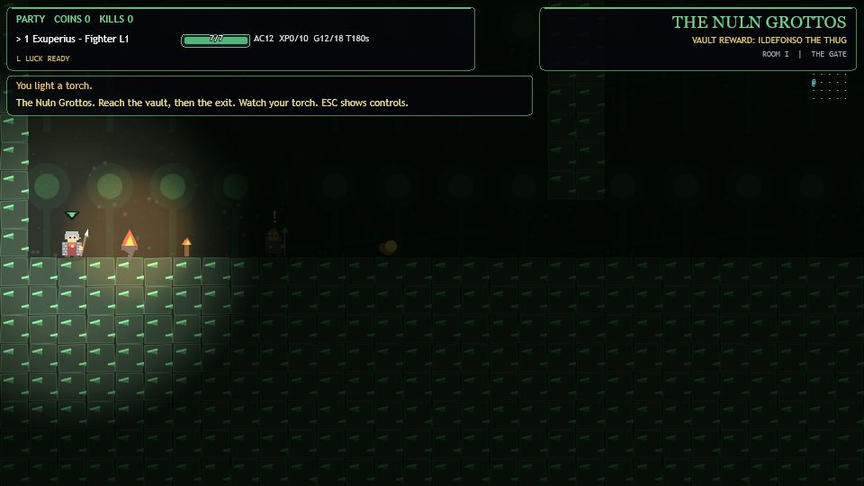
The Nuln Grottosdwellers-in-the-deep · nuln-fungal-grottos
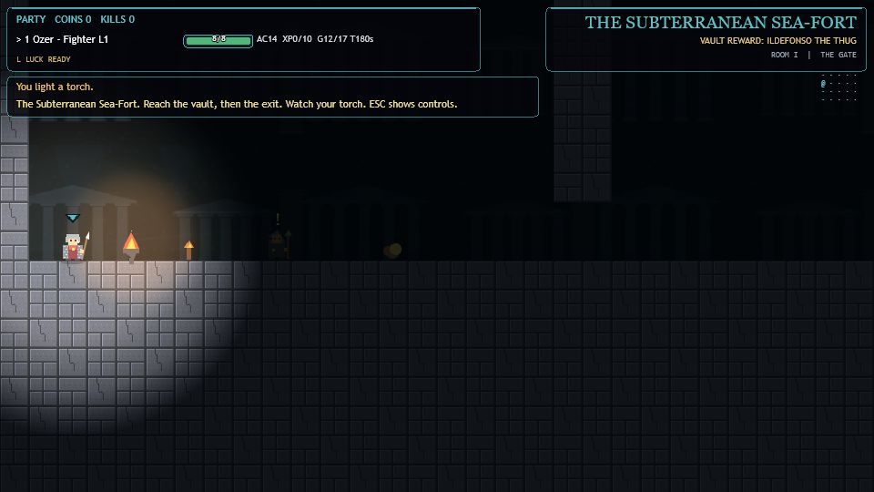
The Subterranean Sea-Fortdwellers-in-the-deep · subterranean-sea-fort
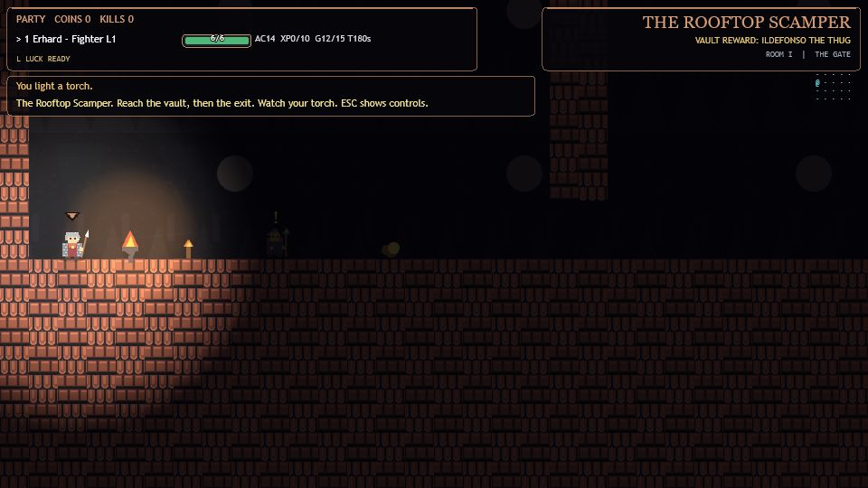
The Rooftop Scampercity-of-masks · rooftop-scamper
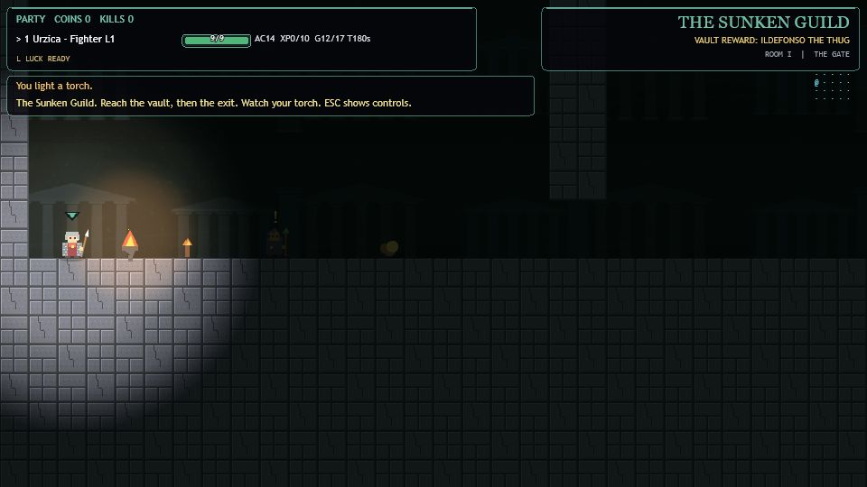
The Sunken Guildcity-of-masks · sunken-thieves-guild
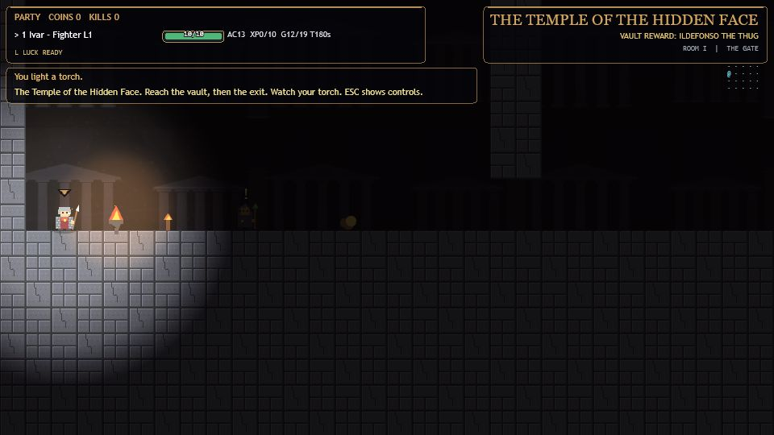
The Temple of the Hidden Facecity-of-masks · hidden-face-temple